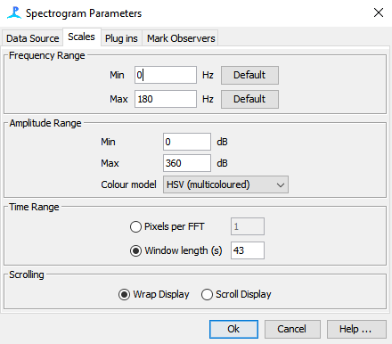

Release notes
The Azigram plugin is version 0.0.1 and has been tested on PAMGuard version 2.01.03e. This plugin is BETA software. It has not been designed for efficiency, has not been thoroughly and may contain bugs. Use at your own risk.
In brief, the Azigram provides a means of viewing directional information from a DIFAR sonobuoy. The Azigram displays directional information via a time-frequency-direction display. The display is similar to a spectrogram, but instead of colour representing power, it represents the angle of arrival with the maximum intensity at each time-frequency cell.
Specifically, this plugin implements the Azigram algorithm as described by Thode et al 2019 J. Acoust. Soc. Am. Vol 146(1) pp 95-102 (doi: 10.1121/1.5114810).
This module also includes the methods described in that paper for frequency domain demultiplexing of directional signals from DIFAR sonobuoys.
The Azigram plugin can be added from the PAMGuard menu via:
File -> Add Module -> Sound Processing-> DIFAR Azigram Engine
The Azigram plugin requires input from an FFT module. The (raw) input into the FFT module must be multiplexed data from a DIFAR sonobuoy with at least 24 kHz of bandwidth (i.e. the same type of raw acoustic input used by the DIFAR Localisation Module).
The Azigram plugin presently has very few settings. The FFT length and FFT hop (and thus, the time and frequency resolution) for the Azigram display are determined by those used in the upstream FFT Module. The Source panel of the Azigram Settings allows for selection of the FFT module to use as input, and selection of specific channels from this upstream FFT module.
The sample rate of the Azigram output can be chosen from the Output panel of the settings. The plugin uses frequency domain downsampling in order to acheive the selected sample rate. When selecting the output sample rate, the output FFT length and FFT hop will be altered in order to maintain the same time and frequency resolution as the upstream FFT module.
The Azigram can be viewed on a Spectrogram Display. The HSV colour model is recommended for viewing Azigrams. This colour model is circular so will better illustrate the circular nature of the angular data (e.g. sounds from 359 degrees will be similar in colour to sounds from 1 degree). The limits of the Amplitude Range on the "Scales" tab of the "Spectrogram Parameters" should be manually set to Min 0 and Max 360. While this tab suggests that the Min and Max are in dB, the Azigram module will treat these values as degrees if an Azigram is being displayed.

The screenshot below shows the DIFAR Azigram Module displaying the Azigram output (top graph) and regular spectrogram ouput (middle panel) of a synthetic test signal. The test signal is a simulated DIFAR source with 8 short FM downsweeps arriving from 0-315 degrees in 45 degree increments. The bottom panel shows the PAMGuard Data Model.